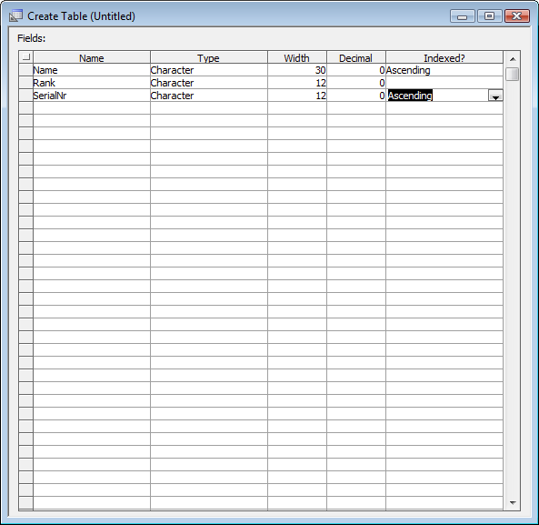
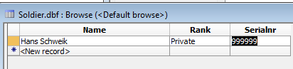

Saving Dialog Contents to a DBF
In this example we will modify the previous example to save its contents to a DBF database record. First we will need to create an appropriate DBF table. Create a new DBF table in your project and add the fields:
Save the table as "soldier".
In your SimpleDialog project, add the code in blue to the afterDialogValidate server-side event:
...
'e.javascript - if you want to send some javascript back to the browser, set this property.
'debug(1)
dim tbl as P
tbl = table.open("soldier")
tbl.enter_begin(.T.)
tbl.NAME = e.dataSubmitted.NAME
tbl.RANK = e.dataSubmitted.RANK
tbl.SERIALNR = e.dataSubmitted.SERIALNR
tbl.enter_end(.T.)
tbl.close()
e.javascript="alert('Submitted: "+e.dataSubmitted.NAME + ", " + e.dataSubmitted.RANK
e.javascript=e.javascript + ", " + e.dataSubmitted.SERIALNR + "');"
end function
Save the dialog, go to working preview, and enter a record. We entered Hans Schweik, Private, 999999. Press Submit and you'll see the alert box. If you now check the soldier table, you'll see a new record for Private Schweik.

If you'd like to make this a form for entering many new records, you can automate the clearing of the form after submission by adding {dialog.object}.resetForm(); to the e.javascript value.
To make the form more robust, you can add maximum length properties (currently -1) to the three textbox controls to match the sizes of the database fields. To make the code more robust, add error handling for the table code that returns e.javascript with an error message, for example something like the following.
function afterDialogValidate as v (e as p) ' ... comments omitted ... on error goto fail dim tbl as P tbl = table.open("soldier") tbl.enter_begin(.T.) tbl.NAME = e.dataSubmitted.NAME tbl.RANK = e.dataSubmitted.RANK tbl.SERIALNR = e.dataSubmitted.SERIALNR tbl.enter_end(.T.) tbl.close() e.javascript="alert('Submitted: "+e.dataSubmitted.NAME + ", " + e.dataSubmitted.RANK e.javascript=e.javascript + ", " + e.dataSubmitted.SERIALNR + "');" return fail: errnr = error_code_get() msg = error_text_get(errnr) msg = stritran(msg,crlf()) msg = stritran(msg,"\\","\\\\") e.javascript="alert('"+msg+"');" end function